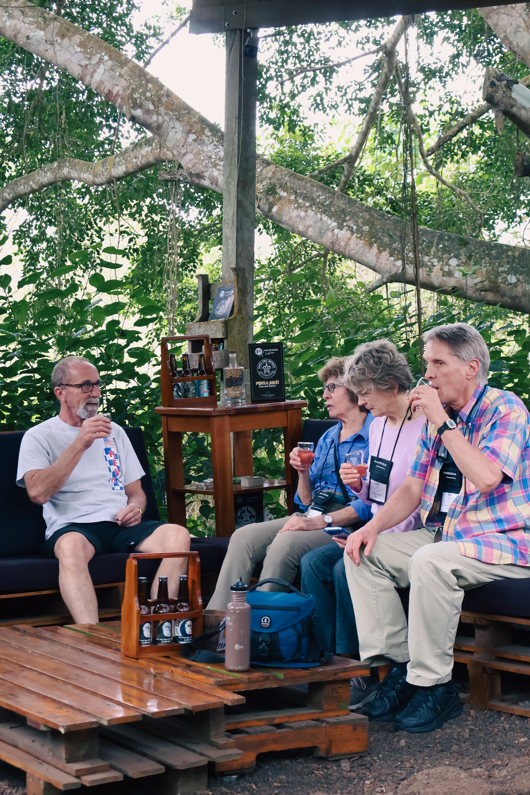
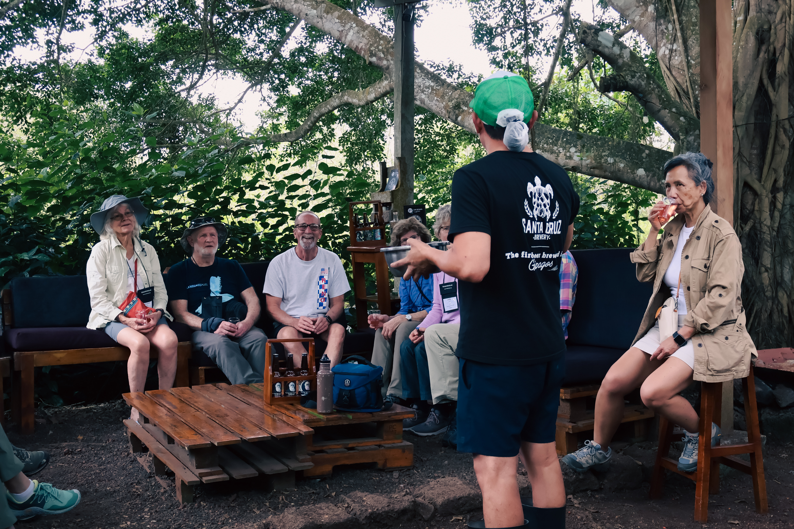
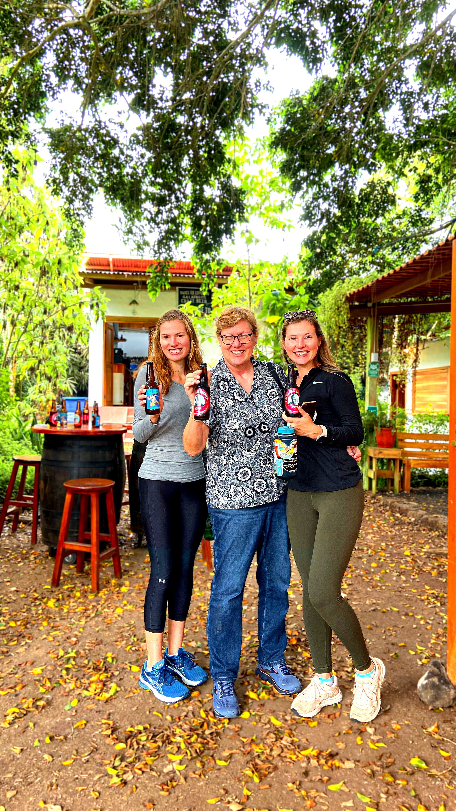
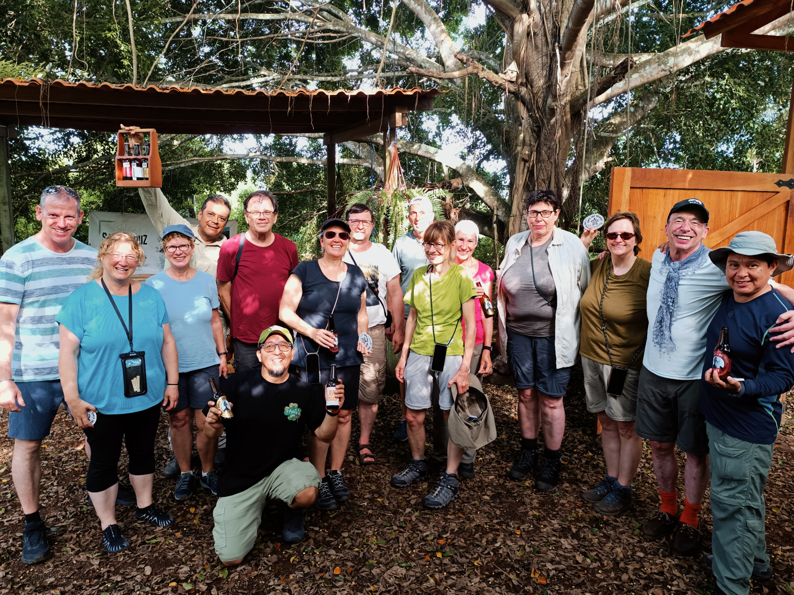
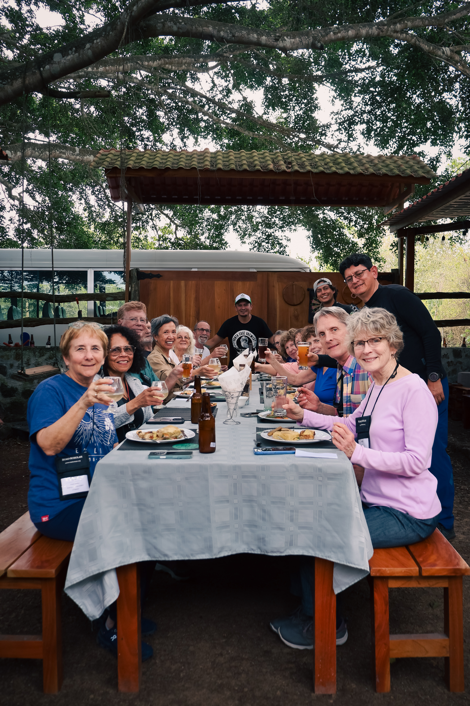
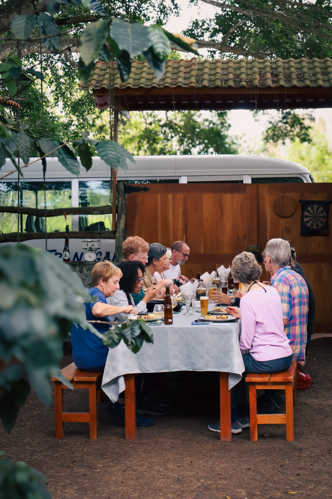
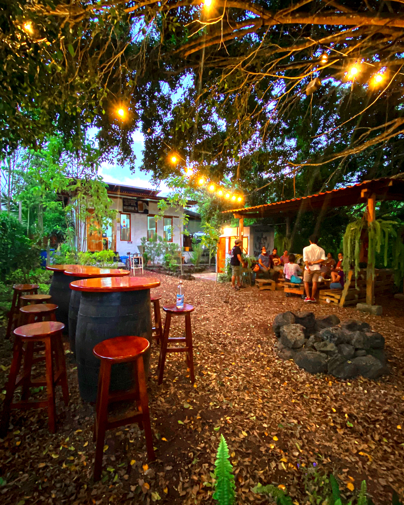

Tour vivencial
cervecero
Conoce nuestra historia, participa en el proceso y disfruta una cerveza rodeado de naturaleza.
Descubre la experiencia
Cerveza, naturaleza y buena vibra
Descubre cómo nació la primera cervecería de Galápagos y vive de cerca el proceso que transforma nuestros ingredientes en cervezas artesanales llenas de identidad.
La experiencia combina aprendizaje, participación y degustación en un espacio al aire libre, rodeado de la naturaleza propia de las islas.
La visita incluye
- 01
Explicación de la historia de la cervecería Santa Cruz.
- 02
Experiencia organoléptica con las materias primas utilizadas en la elaboración de la cerveza.
- 03
Participación en el proceso de producción mediante la molienda de malta en nuestra bicicleta-molino.
- 04
Degustación de cerveza en un espacio al aire libre, rodeado de naturaleza propia de Galápagos.
- 05
Charla de cierre para compartir y conversar sobre la experiencia.
- 06
Juegos de mesa y beer pong si el grupo lo requiere.
- 07
Uso del espacio para conferencias o reuniones; contamos con parrilla y pit de asados.
- 08
Incluye un adhesivo o portavasos. Quien decida no consumir cerveza puede llevar una botella de la variedad disponible en stock.




Experiencias para grupos
También ofrecemos alternativas especiales para integrar el tour en itinerarios y paquetes turísticos:
Queremos conocer tus ideas
Estamos emocionados de conocer tus ideas y acompañarte en cada paso. Ya sea que quieras abrir tu propio restaurante, bar o cafetería, necesites asesoría técnica, distribuir nuestras cervezas artesanales o incluir nuestro tour vivencial cervecero en tus paquetes turísticos en las islas, estamos listos para hacerlo realidad contigo.
Nuestro equipo combina experiencia, pasión y conocimiento local para ayudarte a construir una propuesta auténtica y exitosa, alineada con la esencia de Galápagos y la buena vibra que nos caracteriza.
Conversemos
